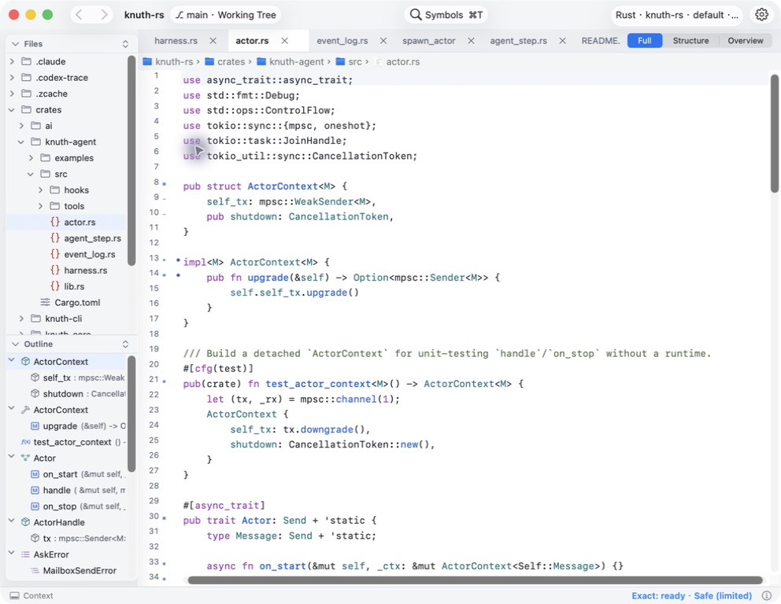

Follow the connections
Find a symbol, follow its callers, and bring definitions into view. Keep the context close to the code.
A quiet space to understand unfamiliar code.
Native to macOS. Read-only by design.
macOS 14+ · Swift 6 · Open source

Find a symbol, follow its callers, and bring definitions into view. Keep the context close to the code.
Explore Git snapshots and compare versions side by side, without checking out a commit or changing your working tree.
Save bookmarks and notes. Freeze a path as a Reading Set to return to its captured source and evidence after a restart.
Build Cairn on your Mac with a Swift 6 toolchain.
Read the build guide# Run in Terminal
git clone https://github.com/sonald/cairn.git
cd cairn
brew install libgit2
CAIRN_LIBGIT2=brew bash scripts/make-app.sh
open .build/distribution/Cairn.appLocal build · ad-hoc signed · not notarized